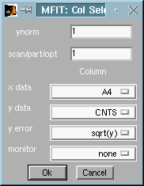
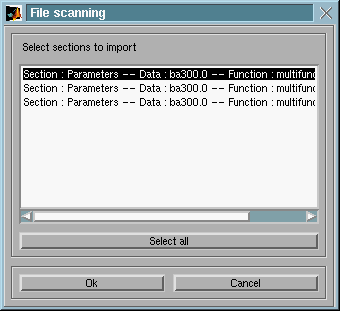
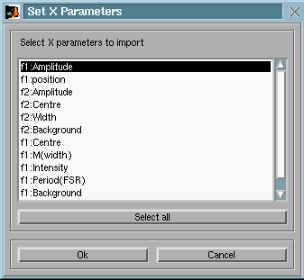
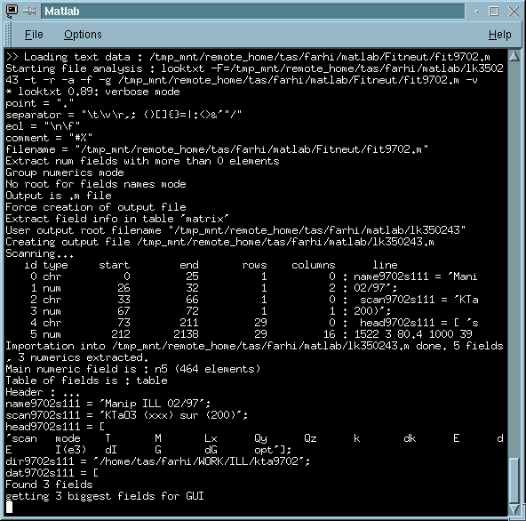

Version 4.2. (1999)

Fig 1 : Mfit : column selector in GUI mode
You may modify here, if necessary, the x, y ,error
and monitor columns assignments. The final signal is y divided
by the monitor (none means 1), and multiplied by ynorm.
In some cases where many signals are stored in a single file (for instance
the SPEC files), you can enter the scan number (#) in a given experimental
file.
Also, if the load routine handles it, you can ask for an automatic
parameter search in the data file (use '1,setpar' as scan/part/opt
specification). For instance, the ILL data load routine can get the temperature,
the 3-axis instrument parameters, etc...and transfert them to the Mfit/Rescal
windows.
This routine enables to plot fit parameters versus some others.
An Mfit parameter file usually contains a serie of similar
fit results (see the Saving results page,
and the AutoSave feature).
When loading the data file, you are first asked to choose among the different results stored in it with a window like:

Fig 2 : Mfit : parameter file part selector for importation
Then the parameter file is analysed, and a list of parameter names found inside the selected sections is given. Choose the X and Y data in that set. Multiple choices are possible (concatenation).

Fig 3 : Mfit : parameter file X-Y selector for importation

Fig 4 : Matlab workspace : The Mfit Multiload file analysis
with looktxt/texmex.
This shows the analysis/importation process, sorting character strings, comments, and numerical values. Then, a pou-up window will ask what numerical part should be used as data to import. Of course, you should choose a vector or matrix numerical field (the size of each part is indicated between quotes):
In that example, the General Load routine automatically selects the bigger numerical field, which is a matrix of dimension 29x16 numbers. Then, the usual Column selector is displayed, and the importation process goes on. Usually, the data files contain a header indicating the column significance just before the data, as shown in that example. This indication is to be used for selecting the column affectation for X, Y, error and monitor.
In that example, we have previously defined the variable 'a' in the matlab workspace
>> a=2;After selecting OK, x will be the vector 1:100 , y will be assigned the evaluated expression using a and x. The error will be constant (not specified by user), but it could have been 'sqrt(abs(y))'.
See also : Exchanging data
between Mfit and the matlab workspace (Mfit
variables, fromfit and tomfit commands)